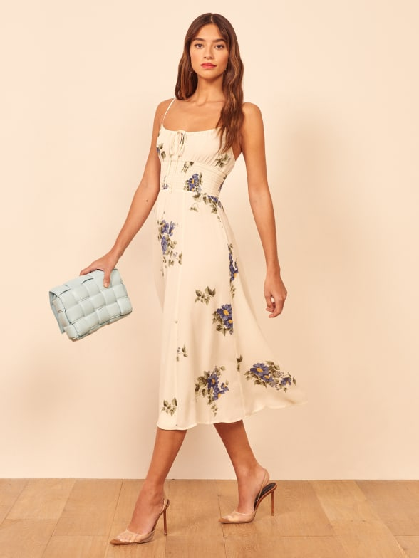

Sustainable Clothing Brands
These are brands that utilize sustainable methods in making clothes as well in how they treat their workers. They tend to be expensive.
Resell sites
Websites where you can buy used clothes and items for varied prices.
Thrift and Vintage Stores
Fairly cheap, ethical places to buy used clothing.

Small businesses
Not always as environmentally conscious as sustainable brands, but don't involve worker explotation
Sustainable Brands
Sustainable brands are quickly growing due to the emphasis on climate change within current American society
While they can be flawed and still do damage to the environment, they are far better for the environment and for workers
These brands tend to be expensive; Reformation or Lisa Says Gah dresses can sell for $200 a piece. Everlane, while still expensive, has more do-able prices. This is a great option for those who can afford it.
Resell Sites
These sites are cheaper and more realistic for most people.
Apps like Depop or Poshmark are a good place to find used clothing that has already been made rather than producing new items.
Thrift and Vintage Stores
Thrift stores are a great place to shop sustainably and ethically without costing too much money.
Goodwill outlets are where clothes that are not sold at regular thrift stores end up. Items are sold by weight and are significantly cheaper.
These can also be a great option to get clothes before they are incinerated or put in landfills. Bring clothes and an enthusiasm to Goodwill Outlets.
Thrift stores are often hard to navigate so here are some general tips:
Look in all sections and all sizes. Sizes vary based on brand and time they were made so a vary of sizes can fit.
Try all items on
Shop in both the mens and womens sections
Committ to spending a while shopping, so you can look through everything. Great pieces are often hiding
For plus size people it can be hard to find clothes at regular thrift stores. Thread Up is an online thrift store that tends to have more size options.
Vintage stores are typically more expensive, but are a great option for occasional buying.
Small Businesses
Many small businesses aren't as sustainable for the earth as other options, but have better ethical practices towards workers
Fast fashion brands consistently exploit their workers, so the treatment of workers is important in a discussion on sustainable fashion.
Before buying from a company, do your research. Often brands that appear sustainable are not as sustainable in practice. Become familiar with their policy and look for details on how they are sustainable.
As a reminder, individuals do not hold most of the blame for the fashion industry's impact on the environment. That falls mostly on fast fashion companies.
Try not to be hard on yourself if you can't shop fully sustainably. Shopping and living sustainably is not easy and is not always attainable.